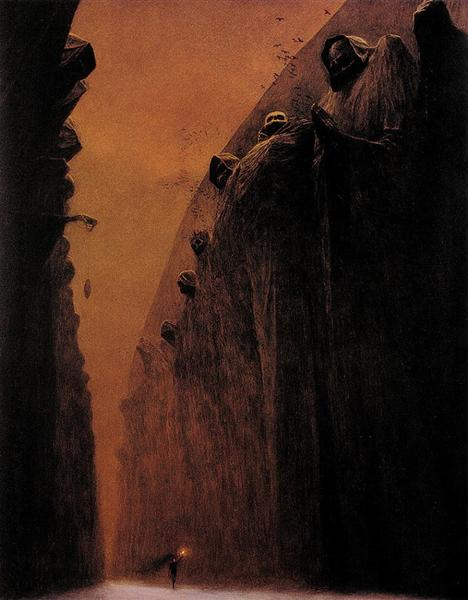
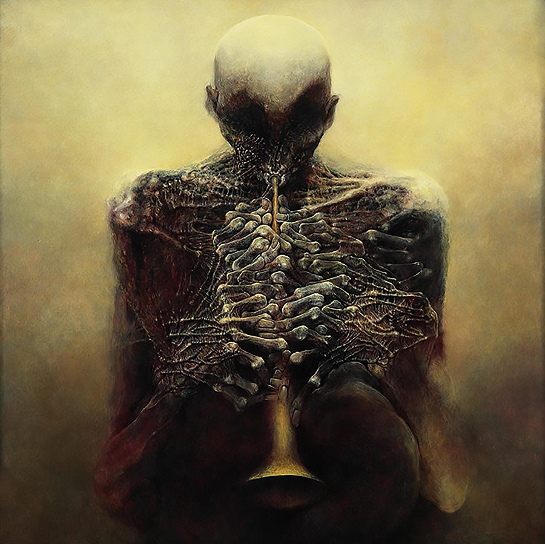

art
This will be the place where I'll talk about some works of art that I like. I'm not really a versed person in anything related to painting but I'll just share what catches my attention.

This one has always struck a chord in me. Out of the many great works that Beksinski made throughout his life, I would say this is a special one—one that truly portrays the dreamlike commotion he wanted his onlookers to feel. The oneiric presence is constant; when you look at this painting, you inevitably feel very small. It’s as if you are trapped in a dimension or reality where you don’t belong, and that is what makes it so striking. It almost evokes the kind of fear that cosmic horror provokes

It's very peculiar that this image always makes me think about myself, there is a very specific gesture I make — one I have never really seen in anyone else, whenever I feel overwhelmed or close to a breakdown, every single time I place my palms against my forehead and begin rubbing my head intensely with my fingers, I don't know exactly why I do it, but that feels as if I was protecting myself from something while I sob